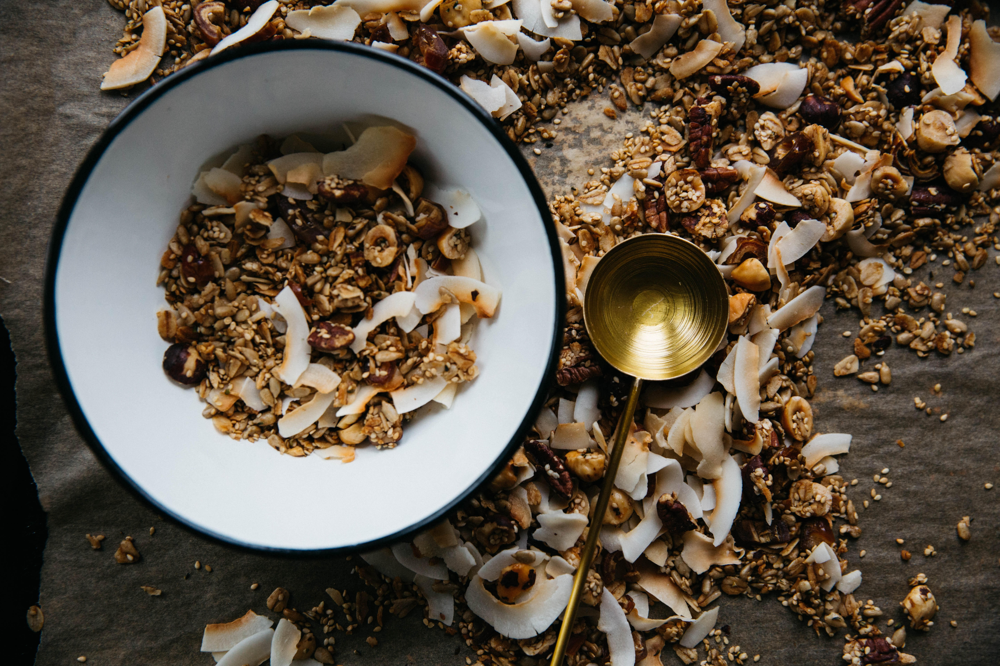

Mark's Granola

Description
Mark's Granola pulls it's light sweetness from a bit of agave and a splash of orange juice.
With a variety of nuts this recipe is customizable to your pallette.
Ingredients
Dry
- 3 cups regular oats
- 1/4c brown sugar
- 1tsp of cinnamon
- 1tsp nutmeg
- 1/2c sliced almonds
- 1/2c walnuts
- 1/2c pecan pieces
- 1/2c sunflower seeds
- 1/2c raisins
Wet
- 1/2c orange juice
- 3tbs cooking oil
- 1/4c agave syrup
- 1tbs vanilla extract
Steps
- Preheat oven to 300 degrees
- Mix dry ingredients together.
- Heat the oj, oil, and agave to boil.
- Add vanilla.
- Mix wet and dry together, leave out raisins.
- Spray baking sheet with non-stick spray.
- Spread mixture on pan.
- Bake 20 minutes.
- Remove and stir.
- Bake another 20 minutes.
- Add raisins or any dried fruit of choice.
- Bake for 10 minutes.
Home